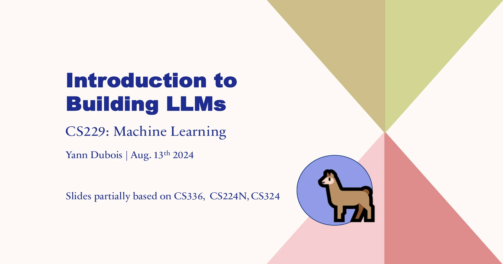

Конспект · Стэнфорд · CS229

Как создают ChatGPT: конспект лекции Стэнфорда
Начальный уровень
ChatGPT и Claude объясняют сложное простыми словами, но иногда уверенно придумывают книгу, которой нет, путаются в умножении или расписывают простой ответ на три экрана. Так их научили. В Стэнфорде есть открытая лекция о том, как из груды текстов делают чат-бота, и после неё эти привычки нейросети перестают удивлять.
Лекции два года. Она не устарела? Устарели названия моделей и цифры: GPT-4, Llama 3, цены аренды видеокарт. А устройство, которое объясняет лекция, то же самое. И ChatGPT, и Claude по-прежнему угадывают текст по кусочкам и доучиваются на ответах и оценках людей. Поэтому всё, что ниже про привычки нейросети, работает и сейчас.
Дальше два пути. Можно посмотреть лекцию целиком: ниже написано, как включить русский голос и с какой минуты начинать. А можно прочитать конспект: восемь главных мыслей лекции по порядку, с примерами и без формул. В конце три приёма для своего чата с примерами до и после: попробуй, и лекция станет видна в деле.
Оригинал
Как создают ChatGPT: где смотреть лекцию на русском
Запись называется Stanford CS229: Building Large Language Models (LLMs) и лежит на YouTube-канале Stanford Online. Смотреть бесплатно, входить в аккаунт не нужно. Читает Янн Дюбуа, в 2024 году аспирант Стэнфорда и один из авторов Alpaca, модели, о которой речь пойдёт в мысли 5. Это гостевая лекция курса «Машинное обучение», а не разбор секретного устройства конкретной версии ChatGPT. Студенты в зале постоянно перебивают вопросами, и это даже удобно: они задают те же вопросы, что возникают у тебя.
Русский голос. YouTube сделал к лекции автоматическую озвучку на 13 языков, русский среди них:
- Открой лекцию на YouTube (из России работает с включённым VPN). Если браузер или приложение на русском, лекция может сразу зазвучать по-русски.
- Заговорил по-английски - нажми шестерёнку в плеере, выбери «Звуковая дорожка», затем «Русский».
Английский голос и русский текст. В «Звуковой дорожке» оставь «Английский (US) (оригинальная)», потом в шестерёнке открой «Субтитры», нажми «Перевести» и выбери «Русский».
Перевод другим голосом. Яндекс Браузер умеет переводить голосом поверх оригинала любое англоязычное видео, на телефоне тоже. Озвучка YouTube и перевод Яндекса звучат по-разному, выбери ту, что приятнее слушать.
Озвучка и перевод автоматические, термины в них иногда звучат странно. Если слово непонятно, загляни в конспект ниже: там те же мысли нормальным русским языком.
Если времени мало: посмотри 03:42-19:06 про то, как модель пишет текст, и 59:53-1:33:46 про то, как из неё делают ассистента и проверяют. Вместе около 49 минут.
Карта лекции
Что идёт в лекции по минутам
Нажми на время, и видео откроется с этого места.
- 00:00 План лекции. Можно пропустить
- 03:42 Как модель пишет текст и что такое токены. Главная идея всей лекции
- 19:06 Как меряют качество модели и почему цифры в рейтингах расходятся
- 28:36 Данные: как чистят интернет перед обучением
- 40:39 Законы масштабирования и сколько стоило обучить Llama 3
- 59:53 Как из модели делают ассистента
- 1:09:51 Обучение на оценках людей: откуда длинные ответы и выдумки
- 1:27:41 Как сравнивают готовых чат-ботов
- 1:37:10 Видеокарты и ускорение обучения. Для программистов
Конспект
Главное из лекции: 8 мыслей
Дальше конспект. Это не перевод, а мысли лекции своими словами и в том же порядке. Примеры и цифры взяты из лекции и её слайдов, цифры на лето 2024 года. У каждой мысли стоит время: нажми, если хочешь услышать это место в оригинале.
Сначала мысль, на которой держится вся лекция. Учёные обычно спорят об устройстве моделей, но на практике, говорит Дюбуа, сильнее всего решают три вещи: данные, проверка качества и железо. Поэтому в лекции почти нет формул про устройство нейросети, зато много про то, на чём её учат и как проверяют.
Мысль 1. Нейросеть угадывает текст по кусочкам
Как появляется ответ
В основе ChatGPT и Claude модель, которая на каждом шаге решает одну задачу: какой кусочек текста вероятнее всего идёт дальше. Пример из лекции: после слов «она, скорее всего, предпочитает» модель взвешивает варианты и может выбрать «собак». Выбрала, дописала и снова угадывает следующий кусочек, уже с учётом нового слова. Так, кусочек за кусочком, складывается весь ответ.
Модель не продумывает ответ заранее целиком. Она каждый раз смотрит на весь текст выше: на твой вопрос, на пример, на уточнения. Поэтому одно точное уточнение в запросе может заметно изменить ответ.
Почему кусочек, а не слово
Такой кусочек называется токеном. Почему текст не режут просто на слова? Опечатка превратила бы слово в незнакомое, и модель не поняла бы его. А в тайском языке, как напоминает Дюбуа, между словами вообще нет пробелов. Резать по буквам тоже плохо: текст станет слишком длинным, и модель будет работать медленно.
Поэтому придумали середину. Сначала каждый знак считают отдельным кусочком, а потом самые частые пары склеивают в один. В лекции это показано на учебном тексте: буквы «t» и «o» часто стоят рядом и становятся одним кусочком «to». Так повторяют много раз, пока не получится словарь. В среднем токен в английском тексте занимает 3-4 буквы.
Почему нейросеть путается в числах
Числа режутся так же, как текст. Пример из лекции: число 327 модель может видеть как один токен, а не как три цифры. Мы считаем столбиком по разрядам, а модель видит число кусками разной длины, и ей трудно складывать и умножать. Это не единственная причина ошибок в расчётах, но важная.
Мысль 2. Качество модели меряют, и цифры легко исказить
Насколько модель «колеблется»
Первая мерка называется перплексия. Простыми словами, она показывает, между сколькими вариантами модель колеблется, когда выбирает следующий кусочек. С 2017 по 2023 год модели перешли от колебаний примерно между 70 вариантами к колебаниям меньше чем между 10. Чем меньше число, тем увереннее модель угадывает текст.
Экзамены для нейросетей
Вторая мерка - экзамены, их называют бенчмарками. Самый известный из них в лекции, MMLU, это тысячи вопросов с вариантами ответа по медицине, физике, астрономии и другим предметам. Пример вопроса прямо со слайда лекции: что верно про сверхновые звёзды определённого типа, и четыре варианта на выбор.
Почему одной модели ставят разные оценки
Такие цифры легко исказить, и Дюбуа приводит наглядный случай. Первую большую модель Meta, Llama 65B, проверили на одном и том же экзамене MMLU два разных рейтинга. Один получил 63,7% правильных ответов, другой 48,8%. Разница только в способе проверки. Вторая ловушка: вопросы экзамена могли попасть в тексты, на которых модель училась. Тогда она не решает задачу, а вспоминает ответ.
Мысль 3. Знания модели - это очищенный интернет
Первый большой этап обучения называется предобучение. Модель снова и снова угадывает продолжение огромного количества текстов и так запоминает язык, факты и связи между понятиями. Но «обучили на интернете» не значит «загрузили все страницы как есть».
Как чистят интернет
Это семь шагов:
- Скачать почти весь открытый интернет. Это около 250 миллиардов страниц и больше петабайта данных.
- Достать из страниц текст и выкинуть разметку.
- Убрать вредное, взрослое и личные данные.
- Удалить повторы. Например, шапки, меню и подвалы форумов, одинаковые на тысячах страниц.
- Отсеять мусорные страницы по простым признакам: слишком мало слов, странные слова.
- Найти хорошие страницы. Хитрость из лекции: научить простую модель отличать страницы, на которые ссылается Википедия, от случайных.
- Смешать разные виды текстов в нужных долях: код, книги, развлекательное.
Сколько текста нужно
Llama 2 учили примерно на 2 триллионах токенов, Llama 3 уже на 15 триллионах. Как именно компании собирают данные, они не рассказывают: это их главный секрет. Данных в интернете уже начинает не хватать, поэтому сейчас много исследуют тексты, которые пишут сами нейросети.
И частое заблуждение: предобучение не значит, что чат-бот при каждом ответе ходит в интернет. Поиск - отдельная функция, лекция её не разбирает.
Мысль 4. Качество модели считают заранее, и стоит это десятки миллионов
Законы масштабирования
Разработчики не гадают, получится ли модель. Есть законы масштабирования: больше данных и больше модель дают предсказуемо лучший результат. Поэтому сначала обучают несколько маленьких моделей, по ним рисуют кривую и заранее считают, насколько хорошей станет большая. Раньше перебирали настройки прямо на большой модели, теперь пробуют на маленьких за день, а большую учат один раз, и это занимает недели.
Параметры - это числа внутри модели, которые подкручиваются при обучении. У больших моделей их сотни миллиардов. Исследование Chinchilla вывело удобную пропорцию: на каждый параметр нужно примерно 20 токенов текста.
Сколько стоило обучить Llama 3
Лектор делает прикидку на салфетке по Llama 3 на 400 миллиардов параметров:
- 16 000 видеокарт работают около 70 дней, это около 26 миллионов часов работы видеокарт. Сама Meta назвала около 30 миллионов.
- Аренда видеокарт по 2 доллара в час: около 52 миллионов долларов.
- Зарплата команды из 50 человек: около 25 миллионов.
- Итого около 75 миллионов долларов за одну модель.
- Выбросы около 4 000 тонн CO₂, примерно как 2 000 перелётов из Нью-Йорка в Лондон и обратно.
И каждое новое поколение компании стараются учить примерно в 10 раз большими вычислениями. Для обычного пользователя вывод такой: число параметров в названии модели само по себе мало что говорит. Важно, на чём и как её учили, а проверить это можно только на своей задаче.
Мысль 5. Ассистентом модель делают примеры ответов
Голая модель не отвечает, а продолжает
После предобучения модель умеет продолжать текст, но ещё не умеет помогать. Пример, который приводит Дюбуа: старую GPT-3 просили «объясни высадку на Луну шестилетнему», а она дописывала «объясни теорию гравитации шестилетнему». В интернете за одним вопросом часто идёт список похожих вопросов, а не ответ, вот она и продолжала список.
Дообучение на примерах
Поэтому модель дообучают на примерах: показывают пары «просьба и хороший ответ на неё». Этап называется SFT. После него модель отвечает на вопрос, держит формат и следует инструкциям.
Удивительно, как мало для этого нужно. В исследовании LIMA число таких примеров увеличили с 2 000 до 32 000, и модель почти не стала лучше. Объяснение такое: знания модель уже взяла из интернета, а примеры учат её только манере. В интернете пишут миллионы разных людей, кто-то списками, кто-то длинно. Примеры подсказывают модели, кем из них быть.
Примеры может писать другая нейросеть
Писать примеры вручную долго и дорого. Команда лектора в Стэнфорде сделала Alpaca так: взяла 175 пар «вопрос и ответ», написанных людьми, и попросила лучшую на тот момент модель OpenAI написать по их образцу ещё 52 000. На этих примерах дообучили открытую модель Llama 7B.
Мысль 6. Оценки людей учат нейросеть и хорошему, и длинному
Откуда берутся выдумки
Сначала о том, почему одних примеров мало, и здесь самое интересное на 1:10:50. Пример из лекции: человек написал образцовый ответ про экономику и сослался на настоящую книгу. Но модель этой книги ни разу не видела. Для неё такой урок звучит как «в таком месте пиши правдоподобную ссылку». Так, по гипотезе, которую приводит лектор, и появляются уверенные ссылки на книги и статьи, которых не существует. Это одна из возможных причин выдумок, а не объяснение всех ошибок.
Выбрать легче, чем написать
Человеку трудно написать идеальный ответ, но легко выбрать лучший из двух. Поэтому дальше модель выдаёт на один вопрос два ответа, человек отмечает лучший, а модель учится чаще выдавать то, что выбирают. Способ называется RLHF, обучение на обратной связи от людей. Ровно так OpenAI сделала ChatGPT из GPT-3. В лекции разобран и более простой способ с тем же результатом, DPO. В открытых моделях сейчас чаще берут его.
Почему ответы стали длинными
Подвох в том, что люди при выборе смотрят на форму. Из двух похожих ответов чаще выбирают более длинный, даже если короткий точнее. Модель это выучивает. На слайде лекции есть живой пример, вопрос «почему взрослые не скатываются с кровати во сне»: после дообучения на примерах ответ занимает 59 токенов, а после обучения на оценках людей становится в разы длиннее. Если тебя раздражают длинные ответы ChatGPT, говорит лектор, причина в этом.
Люди спорят даже сами с собой
Оценивать ответы сложно. На выборе из двух вариантов люди совпадают с мнением большинства примерно в 66% случаев. Пятеро авторов исследования пробовали размечать сами после трёх часов обсуждения правил и получили около 67-68%. Поэтому сейчас ответы всё чаще оценивают другие нейросети: это примерно в 50 раз дешевле, а с большинством людей они совпадают даже лучше, чем сами люди.
Мысль 7. Первое место в рейтинге не значит «точнее»
Как сравнивают готовых ассистентов
Ассистента не проверишь экзаменом с одним правильным ответом: его просят и сочинить письмо, и пересказать текст, и придумать идеи. Поэтому их сравнивают вслепую. В ChatBot Arena обычные люди задают вопрос двум чат-ботам без названий и выбирают, кто ответил лучше. Из сотен тысяч таких голосов собирается рейтинг.
Нейросеть-судья любит многословие
Это медленно и дорого, поэтому команда лектора сделала AlpacaEval: там ответы сравнивает другая нейросеть. Его рейтинг почти повторяет ChatBot Arena, корреляция 98%, считается меньше чем за 3 минуты и стоит меньше 10 долларов. Но у судьи та же слабость, что у людей: он любит длинные ответы.
Пример из лекции с GPT-4. Её сравнили саму с собой. Если попросить отвечать подробно, она выигрывала у обычной версии в 64,3% сравнений. Если попросить отвечать кратко, только в 22,9%. Модель та же, умнее она не стала, изменилась только длина.
Вывод: победа в таком сравнении говорит, какой ответ больше понравился, а не какой точнее. Твоя задача и твоя проверка скажут больше любого рейтинга.
Мысль 8. Сильную модель делает не только количество видеокарт
Все упираются в вычисления. Видеокарты дорогие и их мало, а просто купить больше не получается: видеокартам нужно обмениваться данными, и это тоже тормозит. Часто дорогое железо простаивает, пока ждёт, когда к нему подвезут данные.
Есть два приёма. Первый: считать с меньшей точностью там, где это не вредит, например хранить числа короче. Второй: объединять несколько операций в одну, чтобы реже гонять данные между памятью и вычислениями. Одна такая настройка, по словам Дюбуа, ускоряет модель примерно в два раза.
Итог лекции: хорошая модель складывается из всего сразу, из данных, обучения, проверки и умной работы с железом. В конце лектор советует курсы Стэнфорда для тех, кто хочет глубже: CS224N, CS324 и CS336.
Для своего чата
Проверь лекцию в своём чате: три приёма до и после
Если сложить восемь мыслей, выходит главное: модель учили писать правдоподобно и так, чтобы ответ понравился. А за точность каждой фразы её отдельно не учили. Это легко увидеть самому. Задай вопрос как обычно, потом в новом чате тот же вопрос с добавкой ниже, и сравни ответы. Работает в ChatGPT, Claude и любом другом чат-боте.
Приём 1. Короткий ответ вместо простыни
Тягу к длинным ответам модели дали оценки людей, это мысль 6. Вставь этот промпт перед своим вопросом, формулировка наша:
Ответь в 2-3 предложениях, сразу по сути. Без вступления, списков и заголовков. Если в чём-то не уверен, скажи об этом.До и после. Проверка в Claude 7 октября. Вопрос взяли со слайда лекции, это оригинальный пример Дюбуа: «Почему взрослые не падают с кровати во сне?». Без промпта пришло 284 слова с пятью жирными подзаголовками. С промптом 72 слова, три предложения, и в них та же суть: мозг во сне продолжает чувствовать тело и край кровати. Модель ещё и сама отметила, что это изучено не до конца. У тебя числа выйдут другими, но разницу видно с первого вопроса.
Приём 2. Пометка, в чём модель не уверена
Выдуманные статьи и ссылки могут быть уроком «пиши правдоподобно», это мысль 6. Когда просишь источники, попроси модель саму отметить сомнительное. Пример наш, не из лекции:
Назови 3 научные статьи о том, как сон влияет на память: авторы, название, журнал, год. Про каждую отметь «уверен, что статья существует» или «не уверен, проверь». Не придумывай статьи, которых не знаешь точно.До и после. Проверка в Claude 7 октября. Без последних двух предложений пришёл уверенный список с томами и номерами страниц, и только в самом конце одна общая фраза, что всё приведено по памяти. С промптом пометка стоит у каждой статьи, про одну модель написала «почти уверен», а тома и страницы убрала сама: в них она могла ошибиться. Сразу видно, что проверить в Google Scholar перед тем, как ссылаться. Пометка не гарантия, поэтому источники всё равно открывай.
Приём 3. Числа по шагам
Модель видит числа кусками, это мысль 1. Для важного расчёта проси расписать решение. Числа взяли свои:
Сколько будет 8647 умножить на 3519? Распиши умножение по шагам и в конце проверь результат обратным действием.До и после. В проверке Claude и без добавки ответил верно: 30 428 793. Разница в другом: с добавкой ответ расписан по разрядам, а в конце стоит деление в столбик обратно до 8647. Если модель ошиблась, ошибку видно на конкретном шаге, а не в одной итоговой цифре. Для денег и смет всё равно пересчитай в калькуляторе или таблице.
И ещё два правила без примера
- Задавай контекст. Модель опирается на весь текст выше. Напиши, для кого ответ и для какой задачи. Есть удачный образец - приложи его.
- Сравнивай модели на своей задаче. Дай двум чат-ботам одно и то же задание и заранее реши, какой ответ считаешь хорошим. Это скажет больше рейтинга, см. мысль 7.
Приёмы и промпты для чата - практические выводы из конспекта, а не слова лектора.
Сохранить себе
Вся лекция в одной памятке
Источники
Откуда взят конспект
Конспект написан по оригинальным слайдам Янна Дюбуа и английским субтитрам записи Stanford Online. Цифры сверены со слайдами. Звуковые дорожки проверены в плеере YouTube 7 октября 2026 года. Это пересказ главного, а не полный перевод лекции.
Осталось решить, какую работу отдать нейросети
Инструкция пройдена. А как сделать, чтобы нейросети приводили клиентов?
Концентрат - онлайн-мероприятие Ивана Сергеева по вайбмаркетингу: 13-15 октября, 19:00 по Москве. Участие бесплатное, регистрация на сайте до 14 октября
ЗарегистрироватьсяРеклама. ИП Сергеев И. С., ИНН 352511695540. erid: 2VtzqviiWtm